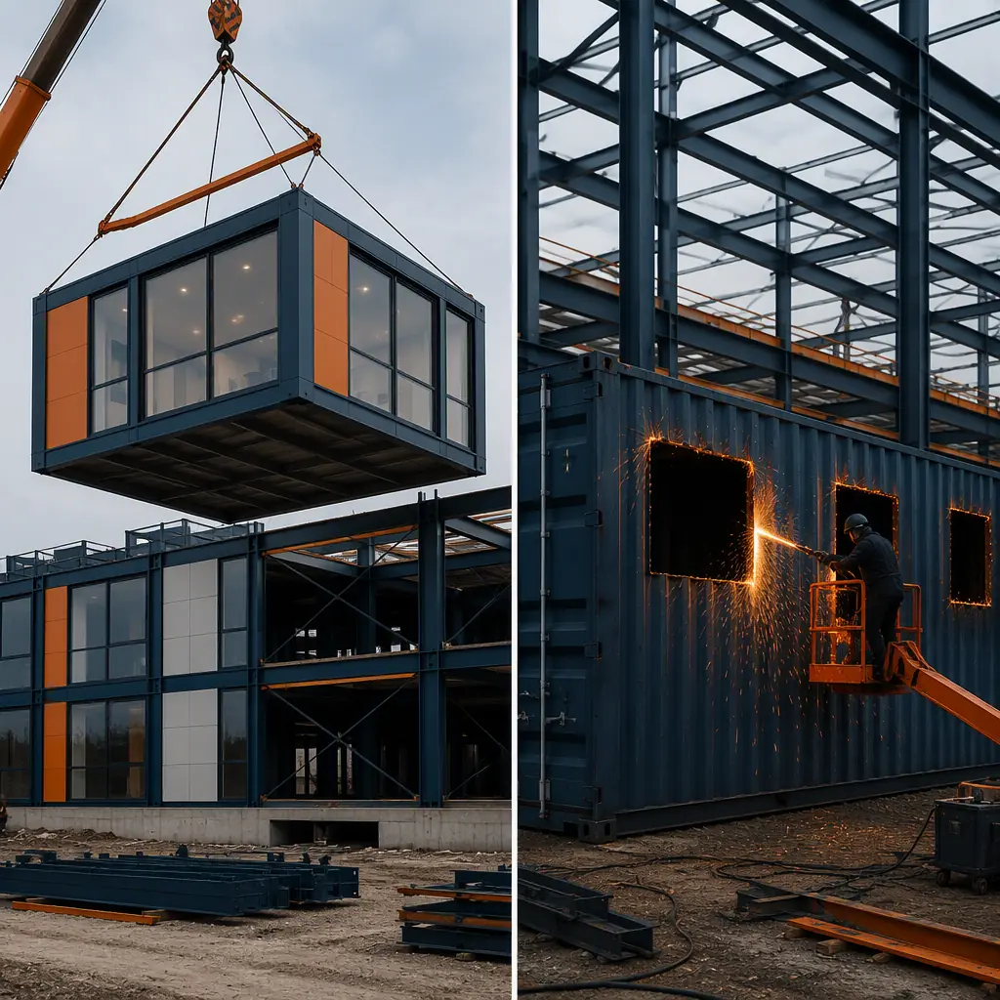
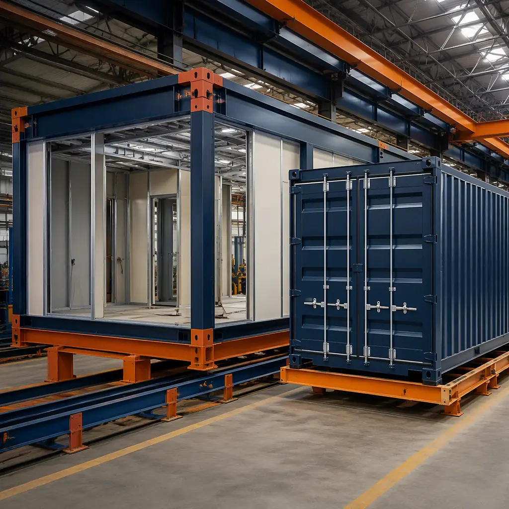
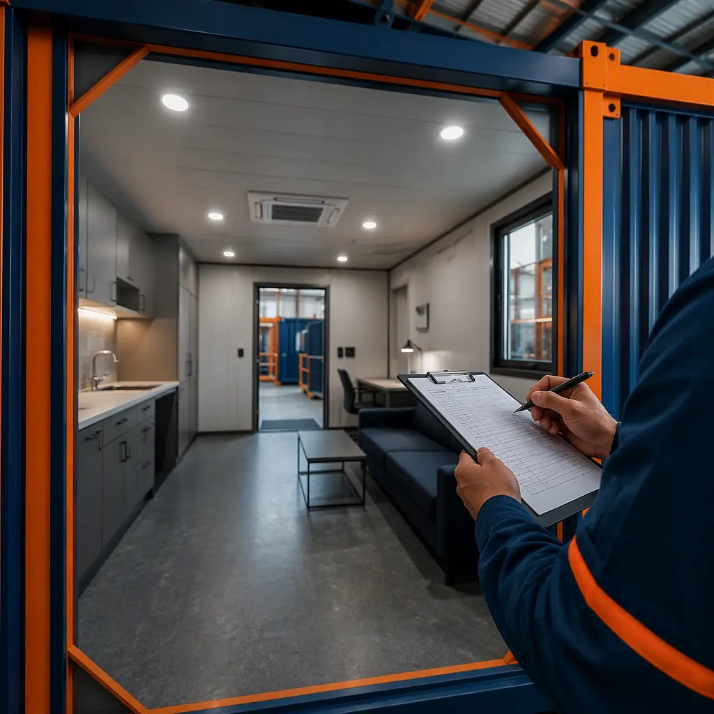
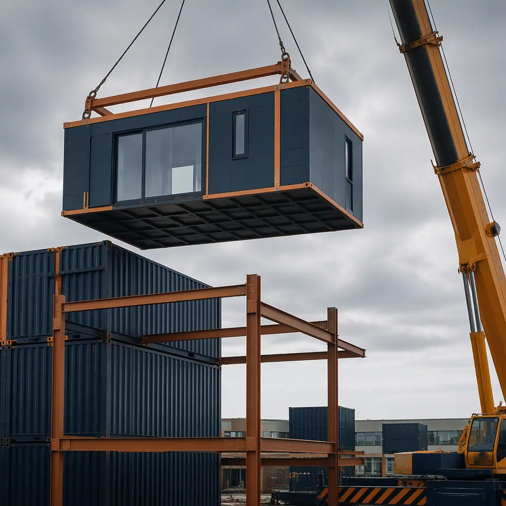

Shipping container architecture captured the public imagination a decade ago. The pitch was compelling: take a $2,000 used steel box, stack a few together, cut some windows, and you have a building at a fraction of conventional cost. Pinterest boards filled with container homes, container offices, and container cafes. But developers who moved beyond the Pinterest board to actual procurement discovered a different reality — one where the container that seemed so affordable became a cost sink the moment it stopped being a box for shipping cargo and started being asked to perform as a building. This comparison examines why purpose-built factory modules consistently outperform converted ISO shipping containers across every metric that matters to commercial project outcomes: structural capacity, thermal performance, dimensional efficiency, code compliance, and total cost of ownership.

Structural Reality — What a Container Is Designed to Do vs What a Building Must Do
An ISO shipping container is engineered for one purpose: to carry cargo. Its structural logic is brilliantly optimized for that purpose — a corrugated Corten steel box with a strong floor, four corner posts that transfer vertical loads, and a roof designed to support stacked containers above it. The container's strength comes from its monocoque structure: the corrugated walls, roof, and floor work together as a stressed skin. When you cut a window into that wall, you do not simply remove steel — you remove part of the structural system. A single 1.2 m × 1.2 m window cut into a container side wall reduces the panel's shear capacity by approximately 40–60%, requiring a steel reinforcement frame that adds $800–1,500 per opening. Cut four windows and a door into a 40-foot container and you have spent $4,000–7,500 just restoring the structural capacity you removed for free. The container's Corten steel — prized for its weather resistance in maritime service — becomes a liability when welded reinforcements introduce heat-affected zones with different corrosion rates, creating galvanic couples that accelerate rust at precisely the points where structural reinforcement is most critical.
A purpose-built modular frame, by contrast, is designed from first principles as a building. The steel frame members — typically HSS 100×100 or 150×150 sections for walls, with wide-flange beams for module-to-module connections — are sized for the specific span, loading, and opening requirements of the project. Window and door openings are framed during fabrication with continuous welded connections, not cut in afterward with reinforcement added as an afterthought. The module frame carries vertical loads through engineered load paths to the corner connections; the wall panels function as enclosure, not as primary structure. This separation of structure from enclosure is the fundamental architectural distinction between modular and container construction, and it has consequences that cascade through every subsequent decision about insulation, MEP routing, and interior finish. For developers comparing this to modular vs steel frame construction, the container comparison sits one tier further down the value chain: a shipping container is to a factory module what raw lumber is to a prefabricated wall panel.
Dimensional Constraints — Why 2.44 Meters Changes Everything
The ISO container's defining dimensional constraint is its interior width: 2.35 m (7 ft 8 in) for a standard 8-foot-wide container, or 2.70 m (8 ft 10 in) for a high-cube. After installing interior wall finishes, insulation, and MEP chases, the clear interior width of a converted container room is typically 2.10–2.25 m. This is narrower than the minimum bedroom width prescribed by most residential building codes (2.40 m in IBC, 2.44 m in many European jurisdictions) and well below what any hotel operator or apartment developer considers marketable. A hotel guest room narrower than 3.0 m feels like a corridor; a container hotel room at 2.2 m feels like a converted shipping container — which is exactly what the guest will perceive, and not in a way that commands premium room rates.
Purpose-built modules, by contrast, use standard factory module widths of 3.0–4.2 m, matching the dimensional modules that architects have used for centuries because they produce rooms that feel proportioned for human occupation. A 3.6 m wide module produces a clear interior width of approximately 3.3 m after finishes — the sweet spot for hotel guest rooms, student housing units, and assisted living suites. At 4.2 m width, a single module can accommodate a one-bedroom apartment with a separate bedroom, or two hotel rooms arranged back-to-back with a central corridor. The factory module's width is limited by transportation regulations (typically 4.3 m maximum for road transport without escort vehicles), not by the dimensions of a shipping standard that was established in 1968 for a completely different purpose. For projects demanding wider spans, modules can be connected side-by-side with the interior partition wall removed, producing clear spans of 6.0–8.4 m — something physically impossible with container construction without removing so much steel that the structure ceases to function.

Thermal Performance — The Insulation Problem Container Advocates Don't Discuss
A Corten steel box with 2 mm wall thickness has a U-value of approximately 5.8 W/m²K — meaning it conducts heat roughly 25 times faster than a building wall built to modern energy code minimums (U-value ≤ 0.24 W/m²K under ASHRAE 90.1-2019 for climate zone 4). To bring a container wall up to code, you must add continuous insulation — but the 2.35 m interior width means every millimeter of insulation steals from an already sub-code room dimension. Adding 100 mm of rigid insulation to both walls and the ceiling reduces clear width to approximately 2.15 m, and the thermal bridge through the steel corner posts and roof bows remains uninsulated because insulating over them would reduce clearance further. The result is a wall assembly with a U-value of approximately 0.35–0.45 W/m²K — compliant in some climate zones, borderline in others, and carrying condensation risk at every steel thermal bridge where warm interior air meets cold steel in winter.
Purpose-built modular walls start with 150 mm or 200 mm steel stud cavities, filled with mineral wool or closed-cell spray foam (R-5.0–6.5 per inch), with continuous exterior rigid insulation providing a thermal break across the studs. The wall assembly achieves U-values of 0.18–0.22 W/m²K as a standard specification, with documented condensation risk analysis performed during the building envelope design phase. The module's roof and floor assemblies include dedicated insulation cavities independent of the structural frame, eliminating the thermal bridge problem entirely. For developers tracking operational energy costs, modular building energy efficiency data shows that purpose-built modules consistently deliver 30–50% lower heating and cooling loads than container-based buildings with equivalent floor area — a difference that compounds over the building's 50-year service life into a six-figure energy cost delta for a mid-rise commercial project.
Code Compliance — The Paper Trail That Containers Cannot Provide
Every structural steel member in a purpose-built modular building carries a mill test report (MTR) that traces the steel from melt to module. The steel is produced under ASTM A992 or A500 specifications with certified yield strength (typically 345 MPa minimum), elongation, and chemical composition. The welds are performed by AWS-certified welders under a qualified welding procedure specification (WPS), with ultrasonic testing of complete joint penetration welds documented in a traceable inspection record. The fire-rated assemblies are tested at an accredited laboratory (UL, Intertek, or equivalent) and listed in the laboratory's directory with an assembly number that any building official can verify. This is what a code official expects to see when they open a submittal package: a complete chain of evidence connecting the building in front of them to an engineering standard they recognize.
A converted shipping container cannot provide this paper trail. The container's steel was produced to an unknown specification at an unknown mill — likely in China, likely to a standard that prioritizes weldability and atmospheric corrosion resistance over structural yield strength. Container steel typically has a yield strength of 235–275 MPa, significantly below the 345 MPa minimum for ASTM A992 structural steel, but this value is estimated rather than certified because the mill certificates are not part of the container's shipping documentation. The container's floor was originally treated with pesticides (typically a mixture of organophosphates and pyrethroids) to meet ISPM 15 requirements for international cargo — chemicals that must be remediated before the container can be occupied as a building, adding $1,500–3,000 per container for testing and treatment. None of the modifications — the cut openings, the welded reinforcement frames, the MEP penetrations through the steel shell — were performed under an audited quality system or inspected by a certified third party. For developers who have invested time in understanding modular construction fire safety code requirements, the compliance gap between a purpose-built modular building and a converted container is not a matter of degree — it is the difference between a product designed for occupancy and a product adapted to occupancy by people who may or may not understand the building code implications of their adaptations.

Total Cost of Ownership — The Purchase Price Trap
| Cost Category (per 15 m² module) | Shipping Container (40 ft HC) | Purpose-Built Module |
|---|---|---|
| Base structure acquisition | $2,500–4,500 (used container, delivered) | $5,000–7,000 (factory steel frame, fabricated) |
| Window/door cutouts + structural reinforcement | $5,000–9,000 (re-engineering + steel + welding) | $0 (openings framed during fabrication) |
| Floor remediation (pesticide removal) | $1,500–3,000 | $0 (new plywood/steel deck installed in factory) |
| Insulation (to code minimum) | $3,000–4,500 (spray foam, interior furring required) | $2,000–3,000 (mineral wool batts in designed cavities) |
| MEP rough-in (plumbing, electrical, HVAC) | $7,000–10,000 (penetrating steel shell, concealing conduits) | $4,000–6,000 (pre-installed chases, designed pathways) |
| Interior finishes (drywall, flooring, millwork) | $5,000–8,000 (field-installed, limited by container geometry) | $5,000–7,000 (factory-installed, standard dimensions) |
| Engineering & code compliance documentation | $4,000–8,000 (custom structural analysis per container) | $1,500–2,500 (standardized, pre-engineered systems) |
| Total per module (excl. transport and site work) | $28,000–47,000 | $17,500–25,500 |
The container's apparent price advantage disappears the moment you move beyond the Pinterest board to a bill of materials. The container is cheaper to acquire but dramatically more expensive to convert into a code-compliant, thermally adequate, dimensionally functional building module. The purpose-built module is more expensive to fabricate initially but costs less to complete because the fabrication was designed for completion from the start. The total cost delta — $10,500–21,500 per module in favor of purpose-built — means that a 50-module hotel project would save $525,000–1,075,000 by choosing factory modules over container conversions, even before accounting for the schedule compression and quality consistency benefits. For developers who have worked through modular construction cost per square foot analysis, the container route almost never survives contact with a detailed pro forma.
When Containers Might Still Make Sense
There are edge cases where converted containers have legitimate advantages over purpose-built modules. Temporary site offices and construction trailers, where the building's expected service life is 2–5 years, do not need 50-year thermal performance or mill-certified structural steel. Pop-up retail installations and event spaces, where the container aesthetic is the brand statement and the 2.35 m width is a feature rather than a bug, can justify the conversion premium because the marketing value of "built from shipping containers" exceeds the cost premium. Art studios and maker spaces in industrial zones, where code requirements are relaxed and thermal comfort expectations are lower, can use containers as cheap shell space with minimal conversion cost. And single-container accessory dwelling units on residential properties with permissive zoning may work economically at very small scale, though the developer should run the full cost comparison before assuming the container route is cheaper.
For any project where the developer intends to hold the asset for more than 5 years, where the building must appraise at a value commensurate with construction cost, where the occupants will include paying tenants or guests, and where the building official will require a complete structural submittal package — the choice between a converted container and a purpose-built module is not a close call. The container path leads to a building that costs more to build, costs more to operate, and appraises for less. The modular path leads to a building that was designed, from the first engineering calculation, to be a building. For developers comparing construction methods across their project pipeline, the modular construction ROI case studies provide data from completed projects that make the financial logic of purpose-built modules difficult to dispute.

A shipping container becomes a building the way a barrel becomes a boat — it can be done, but the result will never compete with something designed for the job. The cost of converting a steel box designed for cargo into a space designed for people exceeds the cost of building a module designed for people from the beginning. In every dimension that matters to project outcomes — structural performance, thermal efficiency, code compliance, interior proportion, and total cost of ownership — purpose-built modules outperform container conversions by margins that grow larger as the project scales.